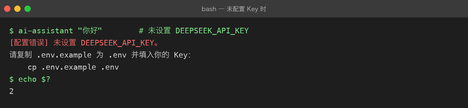
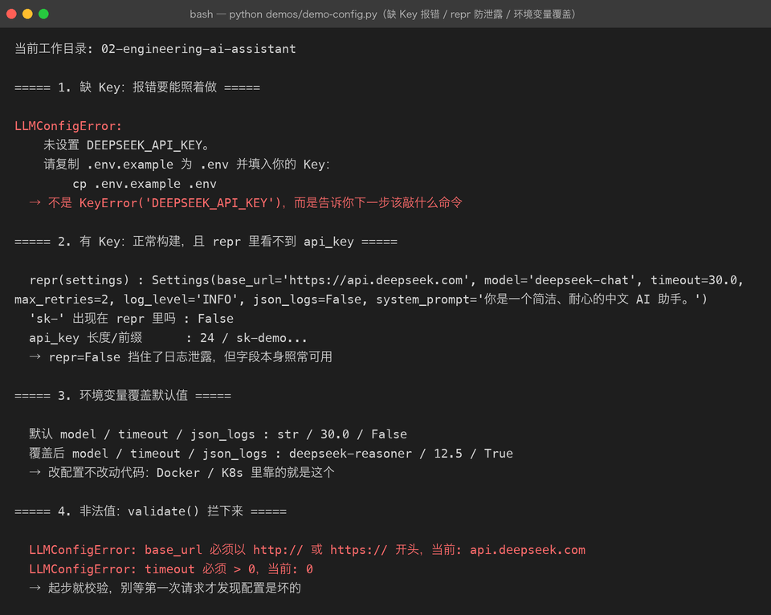

Project 02 — Chapter 05：Config / Environment【配置与环境】
状态：✅ 已校对 对应代码：
src/assistant/settings.py
1. 项目要增加什么能力
Project 01 的配置是这么读的（散落在 config.py 里）：
api_key = os.getenv("DEEPSEEK_API_KEY")
model = os.getenv("DEEPSEEK_MODEL", "deepseek-chat")
timeout = int(os.getenv("DEEPSEEK_TIMEOUT", "30"))能跑，但有三个毛病：
毛病 1：配置散落在代码各处，想知道「这个项目要配什么」只能全文搜索
毛病 2：没有类型 —— timeout 是 str 还是 int 全靠调用处自己转
毛病 3：没法测试 —— 想测「超时配置生效」只能真的去改环境变量本章目标：
把所有配置收敛到一个不可变的
Settings对象，集中声明、带类型、可校验、可注入。
2. 为什么需要这个知识
配置管理的业界共识是 The Twelve-Factor App 的第三条：
配置存储在环境中。
理由很实在：
1. 密钥不能进代码库（否则 push 到 GitHub 就等于泄露）
2. 开发 / 测试 / 生产用不同的值，但代码是同一份
3. 容器化部署时，环境变量是唯一通用的注入方式Python 项目里最常见的做法是 .env 文件 + 环境变量 + 一个集中式配置对象。
3. 核心概念
3.1 配置的三层来源（优先级从低到高）
代码里的默认值 ← 最低：保证「什么都不配也能跑」
↓ 被覆盖
.env 文件 ← 本地开发用，不进 git
↓ 被覆盖
真实环境变量 ← 最高：CI / 生产环境注入为什么要这个顺序？因为生产环境的环境变量必须能压过 .env——否则你本地的 .env 会把线上的配置顶掉。
3.2 .env 文件
# .env（放在项目根目录，必须在 .gitignore 里）
DEEPSEEK_API_KEY=sk-xxxxxxxx
DEEPSEEK_BASE_URL=https://api.deepseek.com
DEEPSEEK_MODEL=deepseek-chat
DEEPSEEK_TIMEOUT=30
LOG_LEVEL=INFO配套一个 .env.example（这个要进 git），只写键不写值：
DEEPSEEK_API_KEY=
DEEPSEEK_BASE_URL=https://api.deepseek.com
DEEPSEEK_MODEL=deepseek-chat新人 clone 下来 cp .env.example .env 就知道要填什么。
3.3 读取：python-dotenv vs 标准库
| 方案 | 依赖 | 说明 |
|---|---|---|
python-dotenv | 第三方 | load_dotenv() 一行搞定，最流行 |
| 手写解析 | 无 | 20 行代码，零依赖（本项目风格） |
Project 01 坚持零依赖，Project 02 已经要装 httpx / fastapi 了，用 python-dotenv 完全合理。但理解它做了什么更重要：
# python-dotenv 的核心逻辑，简化后就是这样
def load_dotenv(path: str = ".env") -> None:
with open(path) as f:
for line in f:
line = line.strip()
if not line or line.startswith("#") or "=" not in line:
continue
key, _, value = line.partition("=")
os.environ.setdefault(key.strip(), value.strip())
# ↑ 关键：setdefault 保证「不覆盖已有环境变量」setdefault 是灵魂：它实现了 3.1 里「真实环境变量优先」的规则。
3.4 配置对象：frozen dataclass
from dataclasses import dataclass, field
import os
@dataclass(frozen=True) # frozen = 不可变，防止运行时被改
class Settings:
api_key: str
base_url: str = "https://api.deepseek.com"
model: str = "deepseek-chat"
timeout: float = 30.0
max_retries: int = 3
log_level: str = "INFO"
@classmethod
def from_env(cls, dotenv_path: str = ".env") -> "Settings":
if os.path.exists(dotenv_path):
load_dotenv(dotenv_path)
api_key = os.getenv("DEEPSEEK_API_KEY", "").strip()
if not api_key:
raise LLMConfigError(
"未设置 DEEPSEEK_API_KEY。\n"
"请复制 .env.example 为 .env 并填入你的 Key。"
)
return cls(
api_key=api_key,
base_url=os.getenv("DEEPSEEK_BASE_URL", cls.base_url),
model=os.getenv("DEEPSEEK_MODEL", cls.model),
timeout=float(os.getenv("DEEPSEEK_TIMEOUT", str(cls.timeout))),
max_retries=int(os.getenv("DEEPSEEK_MAX_RETRIES", str(cls.max_retries))),
log_level=os.getenv("LOG_LEVEL", cls.log_level),
)为什么用 frozen=True：
配置应该是「启动时读一次，之后只读」
如果任何地方都能 settings.timeout = 5，出问题时你根本不知道是谁改的3.5 依赖注入而非全局单例
❌ 反模式（到处 import 一个全局对象）：
# settings.py
settings = Settings.from_env() # 模块级全局
# client.py
from assistant.settings import settings # 测试时没法替换！✅ 正确做法（构造时传进去）：
def build_client(settings: Settings) -> BaseLLMClient:
return DeepSeekClient(settings)
# 测试时
def test_client():
settings = Settings(api_key="test", base_url="http://localhost") # 随便造
client = build_client(settings)这就是依赖注入的全部：不自己造，让别人传进来。测试时传假的。
4. 项目代码
src/assistant/settings.py # Settings（frozen dataclass）+ from_env()
.env.example # 进 git，键清单
.env # 不进 git，真实值
.gitignore # 必须有 .env使用方式：
from assistant.settings import Settings
settings = Settings.from_env() # 启动时读一次
client = DeepSeekClient(settings) # 注入进去
service = AssistantService(client) # 再往上注入5. Java ↔ Python 对比
| Java / Spring | Python | 说明 |
|---|---|---|
application.yml | .env / settings.py | Spring 的 yml 支持嵌套，.env 只有扁平 KV |
@ConfigurationProperties | dataclass Settings | 都是「把配置绑成对象」 |
@Value("${x}") | os.getenv("X") | 同 | ||
System.getenv() | os.environ | 同 |
| Spring Profile | 环境变量切换 | Python 没有内置 profile 概念 |
final 字段 | @dataclass(frozen=True) | 不可变 |
application-dev.yml | .env.local 等约定 | 靠自己约定 |
最大的思维差异：
Spring 有 IoC 容器帮你注入，Python 没有 —— 你得自己把对象一层层传下去。 到 Chapter 09 讲 FastAPI 的
Depends时，会看到 Python 版本的「轻量 IoC」。
6. 常见坑
坑 1：把 .env 提交进 git
git add .env # ❌ 密钥泄露.gitignore 里必须有：
.env
.env.*
!.env.example补救：如果已经提交过，立刻去厂商后台吊销那个 Key —— 从 git 历史里删文件是没用的，GitHub 上的 fork 和爬虫早就抓走了。
坑 2：忘记类型转换
timeout = os.getenv("DEEPSEEK_TIMEOUT", 30) # ❌ 环境变量是 str！
requests.post(..., timeout=timeout) # 可能拿到 "30"os.getenv 的默认值和读到的值类型不一致：默认值你写的是 int 30，读出来是 str "30"。统一转：
timeout = float(os.getenv("DEEPSEEK_TIMEOUT", "30"))坑 3：load_dotenv() 覆盖线上配置
自己写解析时用了 os.environ[key] = value 而不是 setdefault，本地 .env 会顶掉生产环境变量。用 python-dotenv 默认行为是对的（不覆盖），手写时务必注意。
坑 4：在模块顶层就读配置
# settings.py
settings = Settings.from_env() # import 时就读，Key 没配就崩后果：连 pytest --collect-only 都会失败，因为一 import 就炸。
正确做法：暴露 from_env() 函数，由入口（main.py / app.py）在启动那一刻调用。
坑 5：把 Key 打进日志
logger.info(f"使用配置: {settings}") # ❌ frozen dataclass 的 repr 会打印 api_key用 field(repr=False) 隐藏敏感字段：
@dataclass(frozen=True)
class Settings:
api_key: str = field(repr=False) # repr 时显示为 <hidden> 或省略7. 实战挑战
挑战 1：手写 load_dotenv()（20 行，见 3.3），并写测试验证「环境变量已存在时不被 .env 覆盖」。
挑战 2：给 Settings 加一个 validate()，校验 base_url 必须以 http 开头、timeout > 0，不满足就抛 LLMConfigError。
挑战 3（进阶）：支持 .env.local 优先于 .env（常见的多环境约定），并保持「真实环境变量最优先」。
8. 主动回忆
- 配置的三层优先级是什么？为什么真实环境变量要在最上层？
- 为什么
.env不能进 git，而.env.example必须进？ load_dotenv用setdefault而不是直接赋值，是为了什么？frozen=True解决了什么问题？- 为什么不建议在模块顶层就执行
Settings.from_env()？ - 怎么避免
repr(settings)把 API Key 打进日志？
9. 本节完成标准
- [ ]
.gitignore含.env，仓库里有.env.example - [ ] 实现
Settings（frozen dataclass）+from_env() - [ ] 所有配置项集中在一处，代码中不再散落
os.getenv - [ ] 敏感字段用
field(repr=False)隐藏 - [ ] 测试里能造一个假
Settings注入进 client，不需要真实 Key
实际效果——没配 Key 时得到的是友好提示而不是 traceback：


下一章：06-logging.md —— 让程序会「说话」。